v3 DSE · old vs projected · 2026-10-23 · before the bit-plane VTR run
NL-DPE DSE Projection
The crossbar DSE as measured, beside a projection of the same 48 attention builds and 32 FC rows to the bit-plane design. Old is the pre-bit-plane RTL: its simulator cycles, the VTR run of 2026-10-16 and the crossbar tiles of 2026-10-22. Projected keeps each build's Fmax and CLB count from that VTR run, takes its crossbars and memory blocks from the simulator, and its cycles and energy from the bit-plane simulator. Every projected number is an estimate: no bit-plane netlist has been placed and routed yet. The notation is the DSE page's: on each workload a config's value is divided by the worst config's value on the same side, G is the geometric mean of those scores over a family's workloads, and lower is better. G values are relative to their own side, so across the two sides compare ranks and fronts.
Assumptions
- held
- Fmax (the mean of VTR seeds 11, 13, 17) and the CLB count of each build, from its previous (2026-10-16) VTR run. FC: v2's VTR run of its old GEMM.
- predicted
- Crossbars: the simulator's count, which Yosys matched on all 80 bit-plane builds (elaboration, 2026-10-23). Memory blocks: the simulator's memories packed into blocks (area.predictedMemBlocks); Yosys's memory lists matched too, and VPR checks the block count at the smoke. FC: no memory block, the bit-plane GEMM has none.
- simulated
- Cycles (weights preloaded, done − start) and energy (the frozen per-operation prices), from the bit-plane simulator.
- area
- One rule on both sides: CLBs, crossbar tiles (row-parallel, 2026-10-22) and 2 cells per memory block.
- left out
- The critical path and why attention and FC differ: both analyze the pre-bit-plane cycles.
Calibration at the smoke point
BERT-Tiny at 256 × 128: the build the bit-plane VTR smoke places and routes. Old Fmax is the mean of seeds 11, 13, 17 (seed 11 alone: 116.3 MHz).
| quantity | old (VPR) | projected | smoke (VPR) |
|---|---|---|---|
| crossbars | 278 | 278 (simulator) | running |
| memory blocks | 376 | 593 (predicted) | running |
| CLBs | 15,901 | 15,901 (held) | running |
| Fmax (MHz) | 114.6 | 114.6 (held) | running |
The smoke runs VTR with seed 11 on the bit-plane head (started 2026-10-23, 10–20 h [estimate]); its column fills in when it ends.
What the projection changes
Latency changes by the cycles alone, since Fmax is held. The attention head's cycles fall to 0.18–0.51 × of the old, the more the wider the array; FC rows take 19–23 cycles instead of 51–168. The attention head's predicted memory blocks rise on every build, so its area grows a little. Energy moves by at most 0.02 % on any build.
| R × C | attention cycles × | attention memory blocks | attention area × | FC cycles | FC memory blocks | FC area × |
|---|---|---|---|---|---|---|
| 128 × 64 | 0.51 | 304 → 355 | 1.008 | 52 → 21 | 4 → 0 | 0.982 |
| 256 × 64 | 0.45 | 303 → 355 | 1.008 | 77 → 20 | 3 → 0 | 0.984 |
| 512 × 64 | 0.39 | 303 → 355 | 1.007 | 115 → 20 | 1 → 0 | 0.998 |
| 128 × 128 | 0.35 | 288 → 468 | 1.023 | 65 → 21 | 4 → 0 | 0.982 |
| 256 × 128 | 0.32 | 288 → 468 | 1.022 | 90 → 20 | 3 → 0 | 0.979 |
| 512 × 128 | 0.28 | 288 → 468 | 1.019 | 128 → 20 | 1 → 0 | 0.998 |
| 256 × 256 | 0.20 | 316 → 737 | 1.036 | 110 → 20 | 3 → 0 | 0.984 |
| 512 × 256 | 0.18 | 316 → 737 | 1.033 | 147 → 20 | 1 → 0 | 0.997 |
Projected ÷ old. Attention: cycles × and area × are geometric means of the per-build ratios over the 6 shapes, memory blocks the mean per build. FC: cycles the mean over the 4 shapes, memory blocks summed over them (v2's old GEMM placed 0 or 1 block per row), area × the geometric mean of the ratios.
What moved
FC
| view | old | projected |
|---|---|---|
| front, latency vs area | 512 × 256, 256 × 256, 256 × 128, 256 × 64, 128 × 128, 128 × 64 | 512 × 256 |
| #1 by ADP | 256 × 128 | 512 × 256 |
| #1 by EDAP | 512 × 256 | 512 × 256 |
Attention head
| view | old | projected |
|---|---|---|
| front, latency vs area | 128 × 64 | 128 × 64, 256 × 64, 128 × 128, 256 × 128, 256 × 256 |
| #1 by ADP | 128 × 64 | 128 × 64 |
| #1 by EDAP | 128 × 64 | 128 × 64 |
Across the families
| view | old | projected |
|---|---|---|
| front, ADP plane | 256 × 128, 128 × 64 | 512 × 256, 256 × 256, 256 × 128, 256 × 64, 128 × 128, 128 × 64 |
| closest, ADP plane | 128 × 64 (d 0.539) | 256 × 128 (d 0.834) |
| front, EDAP plane | 512 × 256, 256 × 128, 256 × 64, 128 × 64 | 512 × 256, 512 × 128, 256 × 128, 256 × 64, 128 × 128, 128 × 64 |
| closest, EDAP plane | 256 × 128 (d 0.485) | 256 × 128 (d 0.669) |
Fronts in order from the smallest area (per family) or the best FC score (across the families); d = the distance from the origin.
EDAP against ADP, per family
Each config's rank by ADP and by EDAP (1 = best), old and projected, rows in the projected ADP order. A shift of ↑2 means two places better than before.
FC
| R × C | ADP old | ADP proj. | shift | EDAP old | EDAP proj. | shift |
|---|---|---|---|---|---|---|
| 512 × 256 | 5 | 1 | ↑4 | 1 | 1 | – |
| 256 × 256 | 3 | 2 | ↑1 | 4 | 4 | – |
| 256 × 128 | 1 | 3 | ↓2 | 2 | 3 | ↓1 |
| 512 × 128 | 7 | 4 | ↑3 | 3 | 2 | ↑1 |
| 256 × 64 | 6 | 5 | ↑1 | 5 | 6 | ↓1 |
| 512 × 64 | 8 | 6 | ↑2 | 6 | 5 | ↑1 |
| 128 × 128 | 4 | 7 | ↓3 | 8 | 7 | ↑1 |
| 128 × 64 | 2 | 8 | ↓6 | 7 | 8 | ↓1 |
Attention head
| R × C | ADP old | ADP proj. | shift | EDAP old | EDAP proj. | shift |
|---|---|---|---|---|---|---|
| 128 × 64 | 1 | 1 | – | 1 | 1 | – |
| 128 × 128 | 3 | 2 | ↑1 | 3 | 2 | ↑1 |
| 256 × 64 | 2 | 3 | ↓1 | 2 | 3 | ↓1 |
| 256 × 128 | 5 | 4 | ↑1 | 5 | 4 | ↑1 |
| 512 × 64 | 4 | 5 | ↓1 | 4 | 5 | ↓1 |
| 512 × 128 | 6 | 6 | – | 6 | 7 | ↓1 |
| 256 × 256 | 7 | 7 | – | 7 | 6 | ↑1 |
| 512 × 256 | 8 | 8 | – | 8 | 8 | – |
FC: latency vs area
Old · pre-bit-plane cycles
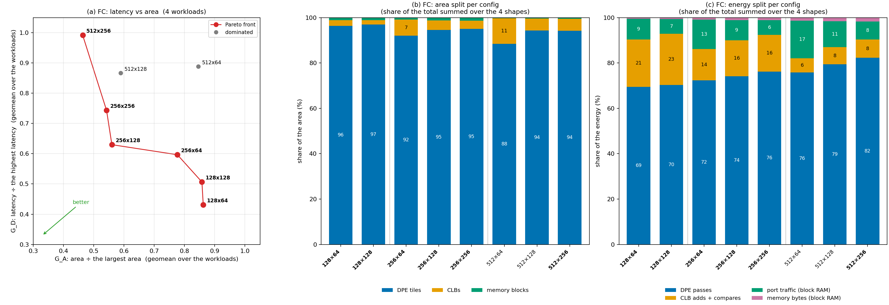
Projected · bit-plane
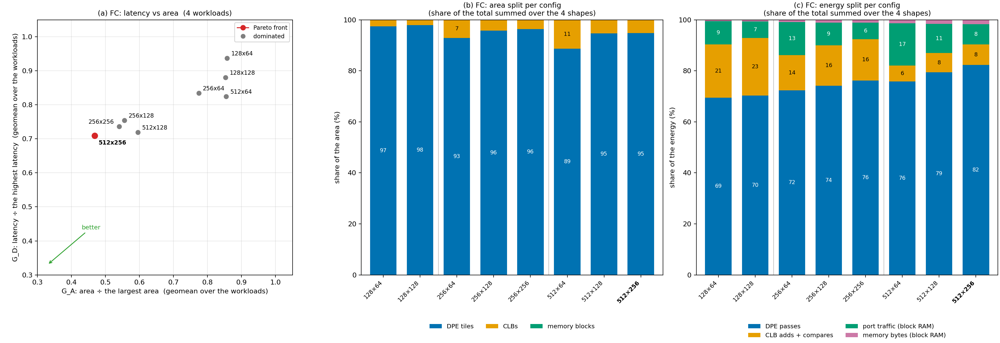
4 workloads, M × K × N: 1 × 512 × 128, 1 × 2048 × 256, 1 × 256 × 512, 1 × 512 × 512. (a) GD against GA and the Pareto front. (b) Each config's area split into DPE tiles, CLBs and memory blocks. (c) Its energy split into the DPE passes, the CLB adds, the passes' block-RAM port traffic and the memory bytes. Both as the share of the total summed over the 4 shapes. Front, from the smallest area to the lowest latency: old 512 × 256, 256 × 256, 256 × 128, 256 × 64, 128 × 128, 128 × 64; projected 512 × 256. Front configs in bold.
Old · pre-bit-plane cycles
| R × C | GA area | GD latency | GE energy | front |
|---|---|---|---|---|
| 512 × 256 | 0.464 | 0.992 | 0.366 | yes |
| 256 × 256 | 0.542 | 0.743 | 0.538 | yes |
| 256 × 128 | 0.560 | 0.630 | 0.500 | yes |
| 512 × 128 | 0.589 | 0.866 | 0.348 | |
| 256 × 64 | 0.777 | 0.597 | 0.576 | yes |
| 512 × 64 | 0.845 | 0.888 | 0.426 | |
| 128 × 128 | 0.858 | 0.507 | 0.924 | yes |
| 128 × 64 | 0.862 | 0.431 | 1.000 | yes |
Projected · bit-plane
| R × C | GA area | GD latency | GE energy | front |
|---|---|---|---|---|
| 512 × 256 | 0.468 | 0.709 | 0.366 | yes |
| 256 × 256 | 0.541 | 0.736 | 0.538 | |
| 256 × 128 | 0.556 | 0.754 | 0.500 | |
| 512 × 128 | 0.596 | 0.719 | 0.348 | |
| 256 × 64 | 0.774 | 0.835 | 0.576 | |
| 128 × 128 | 0.853 | 0.881 | 0.924 | |
| 512 × 64 | 0.855 | 0.825 | 0.426 | |
| 128 × 64 | 0.857 | 0.937 | 1.000 |
Attention head: latency vs area
Old · pre-bit-plane cycles
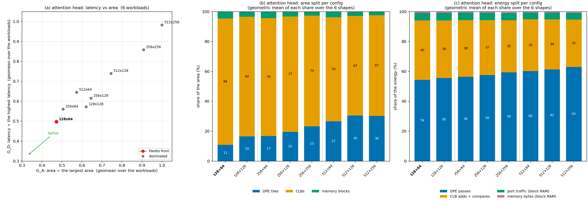
Projected · bit-plane
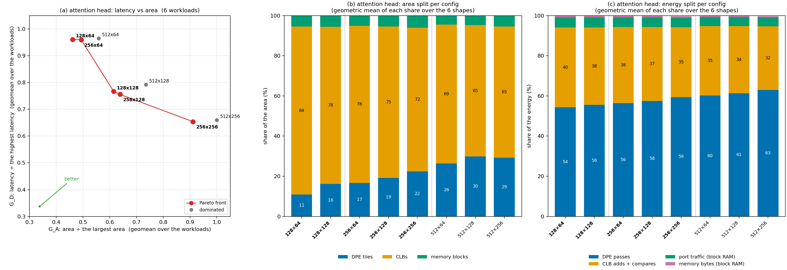
6 workloads (n, dmodel, d): ViT-B/16 (256, 768, 64), DeiT-T (256, 192, 64), BERT-base (128, 768, 64), BERT-Tiny (128, 128, 64), JetFormer-150P (32, 64, 32), JetFormer-JetClass (128, 128, 16). (a) GD against GA and the Pareto front. (b) Each config's area split into DPE tiles, CLBs and memory blocks. (c) Its energy split into the DPE passes, the CLB adds and compares, the passes' block-RAM port traffic and the memory bytes. Both as the geometric mean of each share over the 6 shapes. Front: old 128 × 64; projected 128 × 64, 256 × 64, 128 × 128, 256 × 128, 256 × 256. Front configs in bold.
Old · pre-bit-plane cycles
| R × C | GA area | GD latency | GE energy | front |
|---|---|---|---|---|
| 128 × 64 | 0.472 | 0.497 | 0.802 | yes |
| 256 × 64 | 0.505 | 0.561 | 0.838 | |
| 512 × 64 | 0.573 | 0.646 | 0.918 | |
| 128 × 128 | 0.621 | 0.573 | 0.828 | |
| 256 × 128 | 0.645 | 0.615 | 0.863 | |
| 512 × 128 | 0.745 | 0.740 | 0.946 | |
| 256 × 256 | 0.908 | 0.858 | 0.911 | |
| 512 × 256 | 1.000 | 0.983 | 1.000 |
Projected · bit-plane
| R × C | GA area | GD latency | GE energy | front |
|---|---|---|---|---|
| 128 × 64 | 0.461 | 0.961 | 0.802 | yes |
| 256 × 64 | 0.493 | 0.960 | 0.838 | yes |
| 512 × 64 | 0.558 | 0.965 | 0.918 | |
| 128 × 128 | 0.615 | 0.767 | 0.828 | yes |
| 256 × 128 | 0.638 | 0.756 | 0.863 | yes |
| 512 × 128 | 0.735 | 0.792 | 0.946 | |
| 256 × 256 | 0.911 | 0.654 | 0.911 | yes |
| 512 × 256 | 1.000 | 0.660 | 1.000 |
Across the families: area-delay product
Old · pre-bit-plane cycles
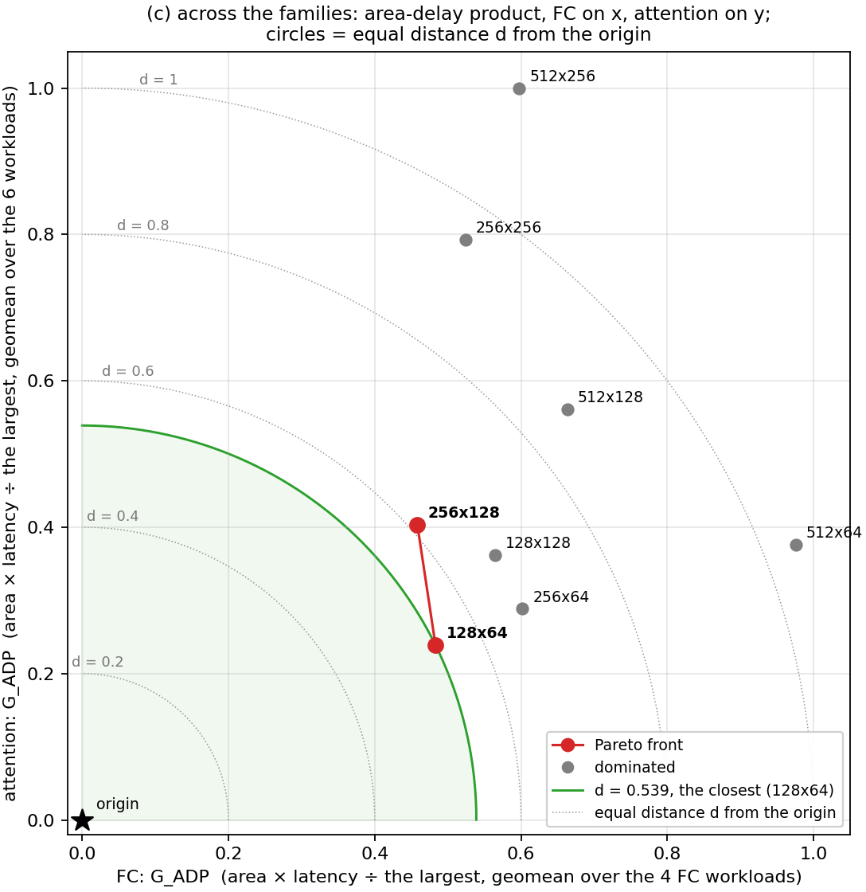
Projected · bit-plane
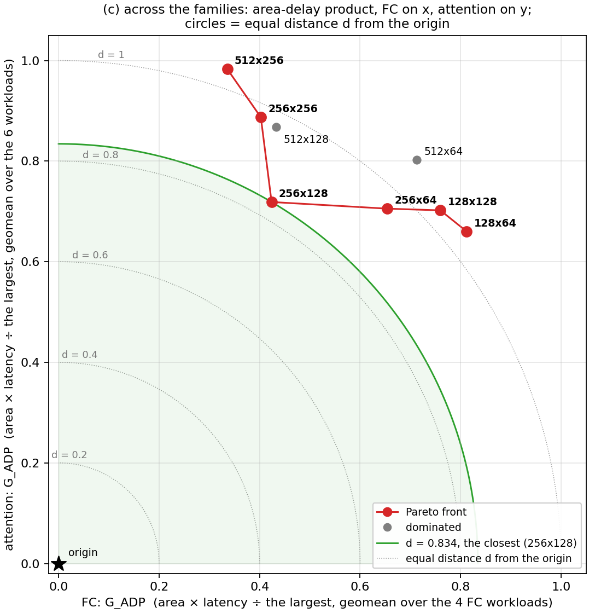
x = GADP in FC, y = GADP in attention; each is area × latency ÷ the largest on each workload, geometric mean over the family's workloads. The circles mark equal distance d from the origin; the tables are sorted by d. Front, from the best in FC to the best in attention: old 256 × 128, 128 × 64; projected 512 × 256, 256 × 256, 256 × 128, 256 × 64, 128 × 128, 128 × 64.
Old · pre-bit-plane cycles
| # | R × C | FC GADP | attention GADP | d | FC GE | attention GE | front |
|---|---|---|---|---|---|---|---|
| 1 | 128 × 64 | 0.483 | 0.239 | 0.539 | 1.000 | 0.802 | yes |
| 2 | 256 × 128 | 0.458 | 0.404 | 0.611 | 0.500 | 0.863 | yes |
| 3 | 256 × 64 | 0.602 | 0.288 | 0.667 | 0.576 | 0.838 | |
| 4 | 128 × 128 | 0.564 | 0.362 | 0.670 | 0.924 | 0.828 | |
| 5 | 512 × 128 | 0.663 | 0.561 | 0.869 | 0.348 | 0.946 | |
| 6 | 256 × 256 | 0.524 | 0.793 | 0.950 | 0.538 | 0.911 | |
| 7 | 512 × 64 | 0.975 | 0.376 | 1.045 | 0.426 | 0.918 | |
| 8 | 512 × 256 | 0.597 | 1.000 | 1.165 | 0.366 | 1.000 |
Projected · bit-plane
| # | R × C | FC GADP | attention GADP | d | FC GE | attention GE | front |
|---|---|---|---|---|---|---|---|
| 1 | 256 × 128 | 0.424 | 0.719 | 0.834 | 0.500 | 0.863 | yes |
| 2 | 256 × 64 | 0.654 | 0.705 | 0.962 | 0.576 | 0.838 | yes |
| 3 | 512 × 128 | 0.433 | 0.867 | 0.970 | 0.348 | 0.946 | |
| 4 | 256 × 256 | 0.402 | 0.887 | 0.974 | 0.538 | 0.911 | yes |
| 5 | 128 × 128 | 0.760 | 0.702 | 1.034 | 0.924 | 0.828 | yes |
| 6 | 512 × 256 | 0.336 | 0.983 | 1.039 | 0.366 | 1.000 | yes |
| 7 | 128 × 64 | 0.812 | 0.660 | 1.047 | 1.000 | 0.802 | yes |
| 8 | 512 × 64 | 0.713 | 0.803 | 1.074 | 0.426 | 0.918 |
FC: ranking by EDAP
Old · pre-bit-plane cycles

Projected · bit-plane
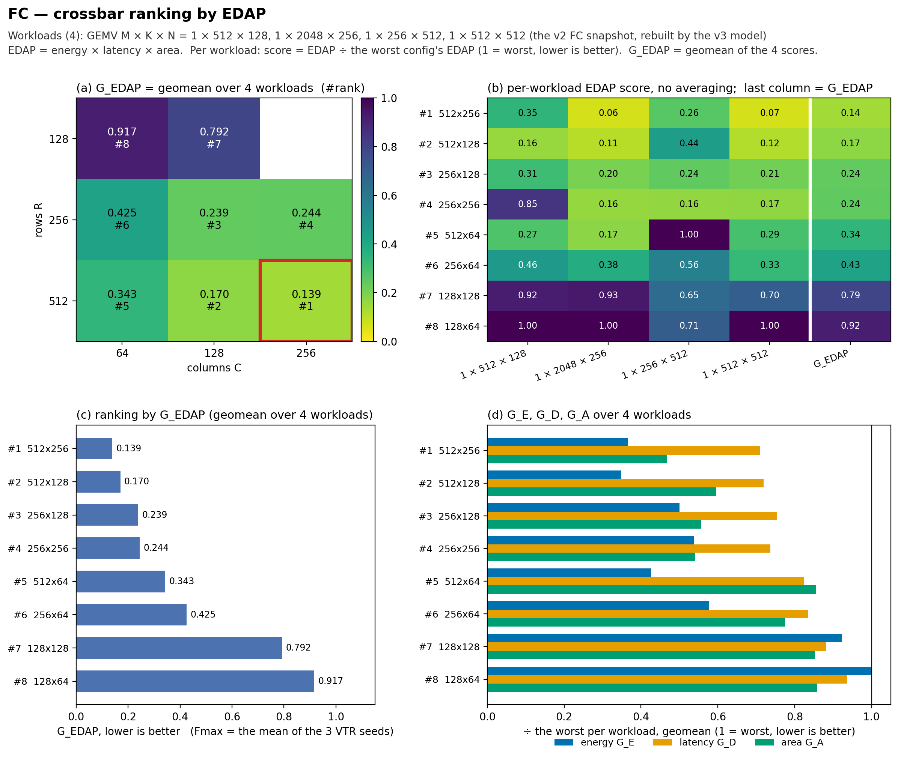
(a) GEDAP on the R × C grid. (b) Each workload's EDAP score, configs in rank order. (c) GEDAP per config. (d) GE, GD and GA.
Old · pre-bit-plane cycles
| # | R × C | GEDAP | GE | GD | GA |
|---|---|---|---|---|---|
| 1 | 512 × 256 | 0.323 | 0.37 | 0.99 | 0.46 |
| 2 | 256 × 128 | 0.338 | 0.50 | 0.63 | 0.56 |
| 3 | 512 × 128 | 0.341 | 0.35 | 0.87 | 0.59 |
| 4 | 256 × 256 | 0.416 | 0.54 | 0.74 | 0.54 |
| 5 | 256 × 64 | 0.512 | 0.58 | 0.60 | 0.78 |
| 6 | 512 × 64 | 0.613 | 0.43 | 0.89 | 0.85 |
| 7 | 128 × 64 | 0.713 | 1.00 | 0.43 | 0.86 |
| 8 | 128 × 128 | 0.769 | 0.92 | 0.51 | 0.86 |
Projected · bit-plane
| # | R × C | GEDAP | GE | GD | GA |
|---|---|---|---|---|---|
| 1 | 512 × 256 | 0.139 | 0.37 | 0.71 | 0.47 |
| 2 | 512 × 128 | 0.170 | 0.35 | 0.72 | 0.60 |
| 3 | 256 × 128 | 0.239 | 0.50 | 0.75 | 0.56 |
| 4 | 256 × 256 | 0.244 | 0.54 | 0.74 | 0.54 |
| 5 | 512 × 64 | 0.343 | 0.43 | 0.82 | 0.86 |
| 6 | 256 × 64 | 0.425 | 0.58 | 0.83 | 0.77 |
| 7 | 128 × 128 | 0.792 | 0.92 | 0.88 | 0.85 |
| 8 | 128 × 64 | 0.917 | 1.00 | 0.94 | 0.86 |
Attention head: ranking by EDAP
Old · pre-bit-plane cycles
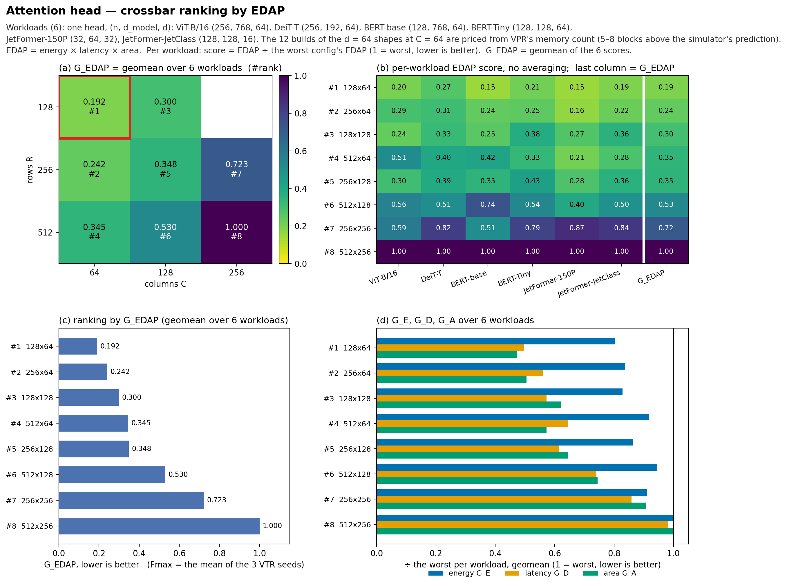
Projected · bit-plane
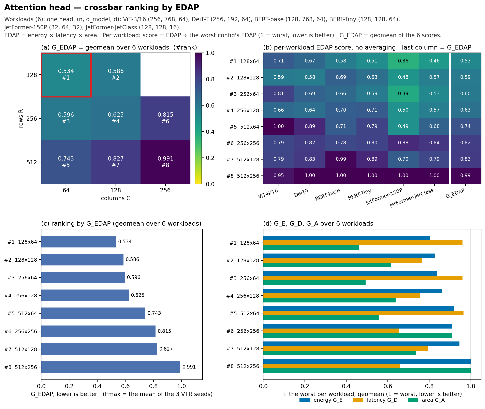
The same four panels for the attention head.
Old · pre-bit-plane cycles
| # | R × C | GEDAP | GE | GD | GA |
|---|---|---|---|---|---|
| 1 | 128 × 64 | 0.192 | 0.80 | 0.50 | 0.47 |
| 2 | 256 × 64 | 0.242 | 0.84 | 0.56 | 0.51 |
| 3 | 128 × 128 | 0.300 | 0.83 | 0.57 | 0.62 |
| 4 | 512 × 64 | 0.345 | 0.92 | 0.65 | 0.57 |
| 5 | 256 × 128 | 0.348 | 0.86 | 0.62 | 0.64 |
| 6 | 512 × 128 | 0.530 | 0.95 | 0.74 | 0.74 |
| 7 | 256 × 256 | 0.723 | 0.91 | 0.86 | 0.91 |
| 8 | 512 × 256 | 1.000 | 1.00 | 0.98 | 1.00 |
Projected · bit-plane
| # | R × C | GEDAP | GE | GD | GA |
|---|---|---|---|---|---|
| 1 | 128 × 64 | 0.534 | 0.80 | 0.96 | 0.46 |
| 2 | 128 × 128 | 0.586 | 0.83 | 0.77 | 0.61 |
| 3 | 256 × 64 | 0.596 | 0.84 | 0.96 | 0.49 |
| 4 | 256 × 128 | 0.625 | 0.86 | 0.76 | 0.64 |
| 5 | 512 × 64 | 0.743 | 0.92 | 0.96 | 0.56 |
| 6 | 256 × 256 | 0.815 | 0.91 | 0.65 | 0.91 |
| 7 | 512 × 128 | 0.827 | 0.95 | 0.79 | 0.73 |
| 8 | 512 × 256 | 0.991 | 1.00 | 0.66 | 1.00 |
Pareto fronts per family
Old · pre-bit-plane cycles
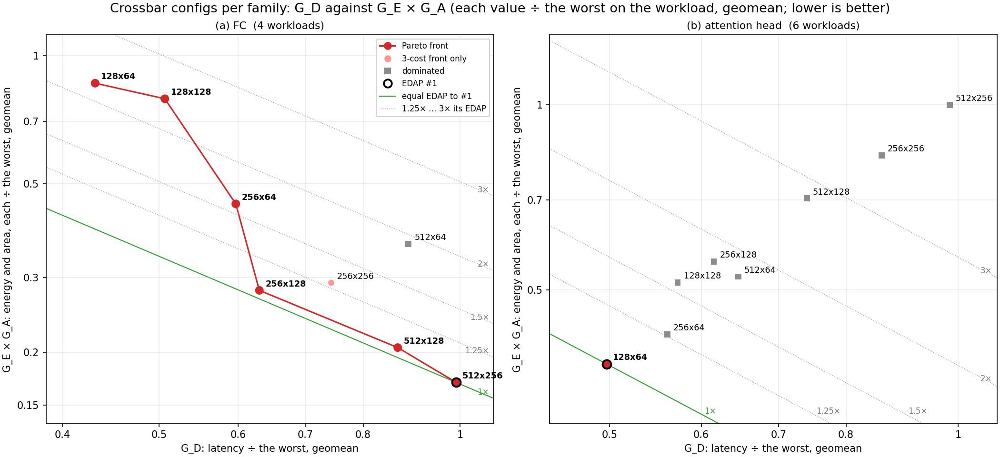
Projected · bit-plane
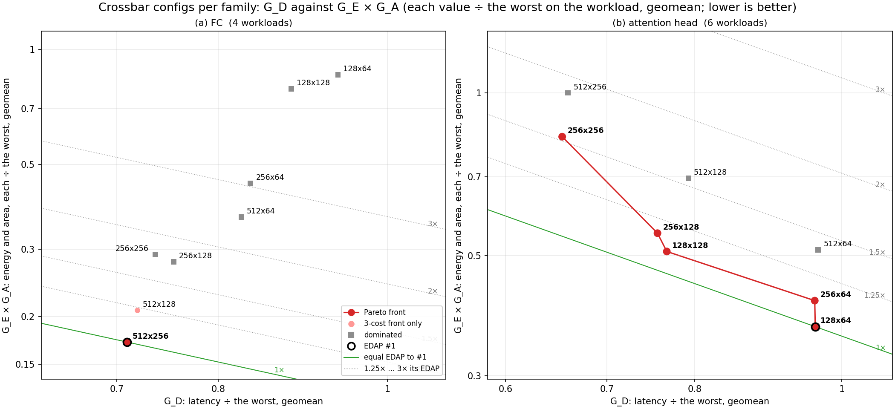
x = GD, y = GE × GA (each value ÷ the worst on the workload, geometric means over the workloads). The diagonal lines are equal-EDAP lines, so their order is the ranking.
EDAP across the families
Old · pre-bit-plane cycles
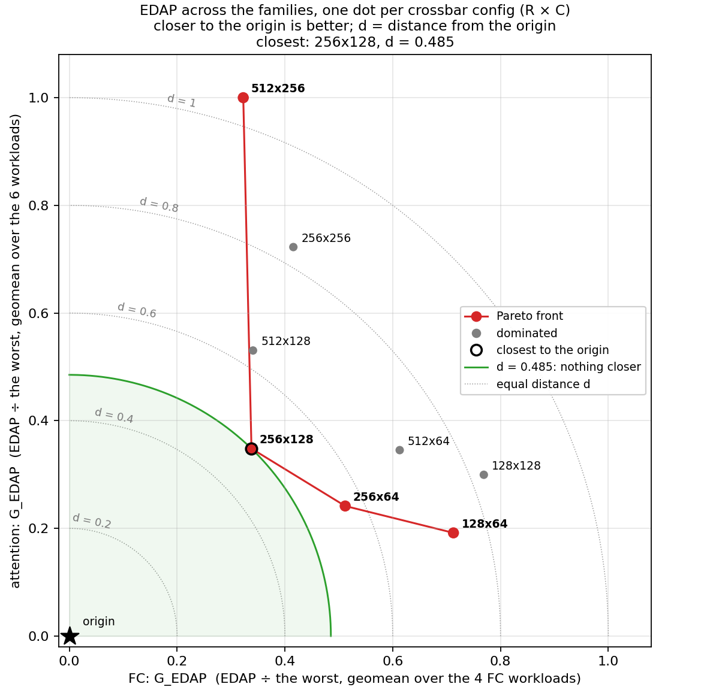
Projected · bit-plane
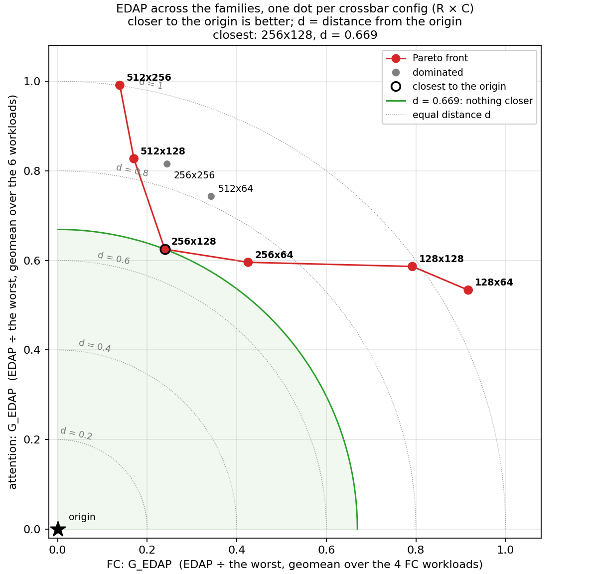
x = GEDAP in FC, y = GEDAP in attention, one dot per crossbar config; the closer to the origin, the better. Closest: old 256 × 128 (d 0.485), projected 256 × 128 (d 0.669).
Old · pre-bit-plane cycles
| # | R × C | FC GEDAP | attention GEDAP | d | front |
|---|---|---|---|---|---|
| 1 | 256 × 128 | 0.338 | 0.348 | 0.485 | yes |
| 2 | 256 × 64 | 0.512 | 0.242 | 0.566 | yes |
| 3 | 512 × 128 | 0.341 | 0.530 | 0.630 | |
| 4 | 512 × 64 | 0.613 | 0.345 | 0.704 | |
| 5 | 128 × 64 | 0.713 | 0.192 | 0.738 | yes |
| 6 | 128 × 128 | 0.769 | 0.300 | 0.825 | |
| 7 | 256 × 256 | 0.416 | 0.723 | 0.834 | |
| 8 | 512 × 256 | 0.323 | 1.000 | 1.051 | yes |
Projected · bit-plane
| # | R × C | FC GEDAP | attention GEDAP | d | front |
|---|---|---|---|---|---|
| 1 | 256 × 128 | 0.239 | 0.625 | 0.669 | yes |
| 2 | 256 × 64 | 0.425 | 0.596 | 0.732 | yes |
| 3 | 512 × 64 | 0.343 | 0.743 | 0.818 | |
| 4 | 512 × 128 | 0.170 | 0.827 | 0.844 | yes |
| 5 | 256 × 256 | 0.244 | 0.815 | 0.851 | |
| 6 | 128 × 128 | 0.792 | 0.586 | 0.986 | yes |
| 7 | 512 × 256 | 0.139 | 0.991 | 1.001 | yes |
| 8 | 128 × 64 | 0.917 | 0.534 | 1.061 | yes |
FC holds the Fmax and CLB counts of v2's old GEMM, which had an adder-tree array and an output serializer; the DSE run re-synthesizes the bit-plane GEMM. Old memory: the 12 attention builds of the d = 64 shapes at C = 64 use VPR's count, 5–8 blocks above the simulator's prediction; every other old build matches it.
Projected rows: v3/dse/results/projection/attn_priced_results.csv, v3/dse/results/projection/fc_priced_results.csv (v3/dse/projection.py; its self-test reproduces today's priced rows from their inputs). Rankings and figures: v3/dse/results/projection/edap/ and adp/, the old ones in v3/dse/results/.